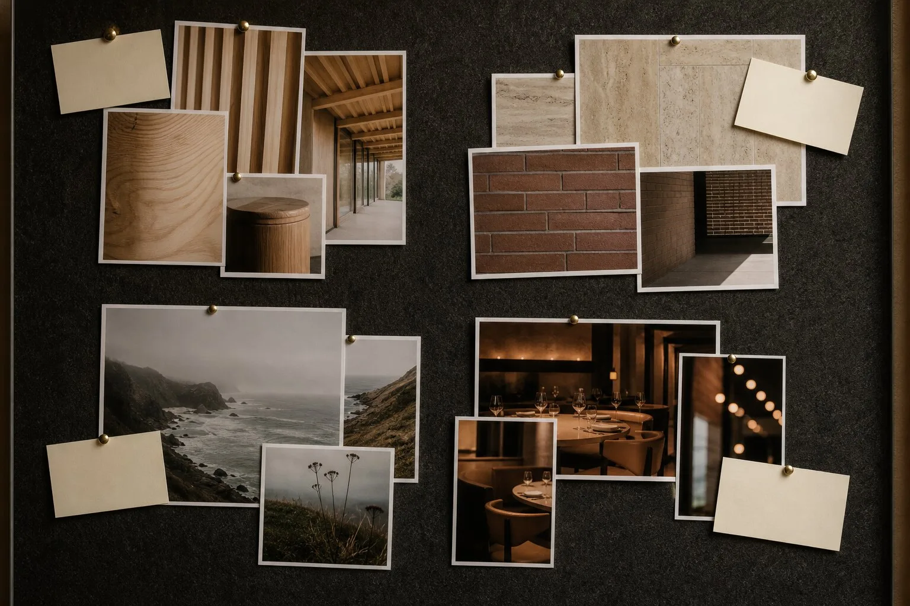
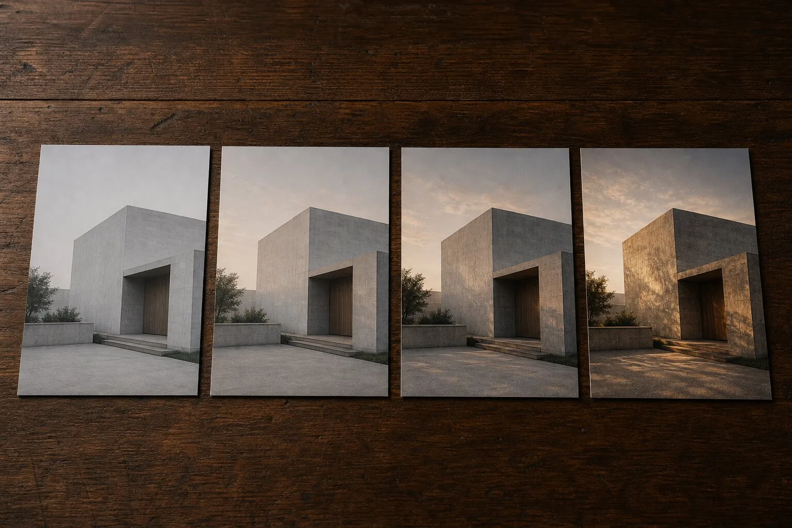

How do you stop reference images from conflicting in an AI render?
Give every reference image one declared job, such as light, material or occupancy, then compare the images for contradictions before generation. Remove any reference whose unwanted traits are stronger than its useful instruction. A smaller board with explicit roles gives the renderer a clearer brief than a crowded collage.
A pale timber interior sits beside a blackened-steel facade, a foggy coastal photograph and a packed restaurant at midnight. The board looks cultured. As an instruction set, it has started a small civil war.
Today's community sweep included the sensible advice to study references in PureRef before shopping for another generator. Chaos, meanwhile, says Veras can extract style, palette and atmosphere from a reference image. That claim names the problem as neatly as the feature. If one image carries all three signals, every unwanted trait comes along for the ride unless the operator states what matters.
Architects know how to pin precedent. Generative systems require a stricter edit. The useful question is not whether an image belongs on the board. It is what command the image is allowed to issue.
Why does a good moodboard make a bad prompt?
A moodboard can hold productive tension. It may pair heavy masonry with delicate joinery because the contradiction is the idea. A renderer receives pixels, not the conversation around the pinboard. It may borrow the masonry's weight, the joinery's color, the photograph's camera and the restaurant's crowd, then average the lot into tasteful soup.
Reference tools differ, but the editorial problem travels. Veras accepts references inside an architecture-focused workflow. ComfyUI can route an image through IPAdapter alongside structural conditioning. Midjourney has its own image and style reference controls. None can infer which cornice you admired and which one you happened to tolerate.
Our earlier guide to reference steering explains what these inputs influence. The missing practice is conflict review. Do it before weights and sliders. A precise weight applied to a confused instruction remains confused.
A reference board is not a pile of taste. It is a set of permissions.
Give each image one job
Write a role beside every image. Use a noun, a boundary and one sentence: “Light only. Take the soft northern window falloff; ignore furniture, color and camera.” That note forces the human decision even when the interface cannot store it.
| Reference role | Take | Reject |
|---|---|---|
| Light | Direction, softness, contrast | Materials, weather, furniture |
| Material | Color, scale, reflectance character | Geometry, camera, joints not designed |
| Occupancy | Density, activity, distribution | Room proportions, branding, faces |
| Camera | Height, lens character, crop | Building form, atmosphere, entourage |
One image may appear to serve two roles. Split it conceptually anyway. If the sunset photograph supplies both light and palette, name both, then decide which wins when the source model cannot support the same shadows. This is the same discipline behind an AI render reference brief: admiration becomes an accountable instruction.

How do you find a conflict before generation?
Compare references in pairs, not as one attractive field. Start with the most consequential channels: geometry, camera, light, material and occupancy. Ask whether both images could truthfully describe the same project at the same moment.
A low winter sun and a flat overcast facade study cannot both control illumination. A 24 mm lobby photograph and a compressed 85 mm exterior cannot both define camera character. Honed limestone and wet polished travertine may share color while issuing opposite instructions about reflectance. The conflict hides when a board is judged by atmosphere alone.
Mark each pair as compatible, subordinate or contradictory. Compatible references reinforce one channel. A subordinate image may remain if its declared job is narrow. A contradictory image leaves the generation set, even if it stays on the wider design board. The renderer does not receive every interesting thought.
Use a source of truth for every channel
Choose one primary reference per role. Supporting images may clarify a detail, but they may not reopen the decision. If the light source is the overcast museum photograph, the warm dusk image cannot quietly vote on color temperature.
Geometry is different. The model, viewport or controlled linework should remain its source of truth. A beautiful precedent photograph does not get permission to add bays. Use the model-adherence controls or ControlNet's depth model to protect form, then let reference images work on appearance. The channels should cooperate, not compete for custody of the building.
For material work, crop aggressively. A brick sample with half a window in frame tempts the generator to borrow the reveal, mullion and shadow too. A clean crop does not guarantee isolation, but it removes several accidental instructions before they become mysterious output defects.
Run a subtraction test, not a prompt marathon
Generate a baseline from the project source with no appearance reference. Add the primary light image and keep the seed, prompt, camera and structural controls fixed where the tool permits. Add the material reference next. Compare each step.
If the second reference damages what the first established, remove it before changing the prompt. This subtraction test identifies the troublesome input. Prompt rewriting often masks the cause by changing several variables at once, producing a new image that looks better and teaches nothing.
Keep a contact sheet with four frames: baseline, light only, material only and both. Label tool, model, date, seed where available, reference role and weight. This is a small cousin of the comparison contact-sheet standard, sized for a single visual brief.

What should happen when the tool offers only one slot?
Do not make a collage and hope the model reads the captions. Pick the highest-value role for that pass. Usually it is light and palette for a concept image, or material character for a finish study. Put other constraints in text only when they can be stated plainly, and preserve geometry through the source model or a control map.
A second pass can address a second role, but check for drift after each one. Local material inpainting is safer than asking a global reference to revise an otherwise accepted frame. The broader the instruction, the broader the collateral change.
If the interface supports several references or typed inputs, resist filling every slot. Capacity is not a creative obligation. Four coherent references may work. Two precise ones often work better.
PureRef is useful because it slows the upload
PureRef's value here is not AI. It gives the board enough space to reveal what a narrow upload tray conceals. Group images by role, enlarge the primary source and write rejection notes beside tempting extras. The board becomes a decision surface before it becomes model input.
That pause matters because current tools market speed. Chaos describes Veras as moving from model to image in minutes and applying a reference's style, palette and atmosphere. Those are vendor claims, not an ArchiGen benchmark. Even if every second is saved, an unresolved reference conflict simply produces the wrong answer sooner.
Delete one beautiful contradiction. Let the remaining image speak in a full sentence.
Evidence note: this is a proposed briefing and evaluation method, not an ArchiGen hands-on test. Sources checked 8 October 2026: the current PureRef product page, Chaos's current Veras page and its claims about reference-led style, palette and atmosphere, plus today's community discussion recommending reference study before tool chasing. Product capabilities are attributed to their publishers.